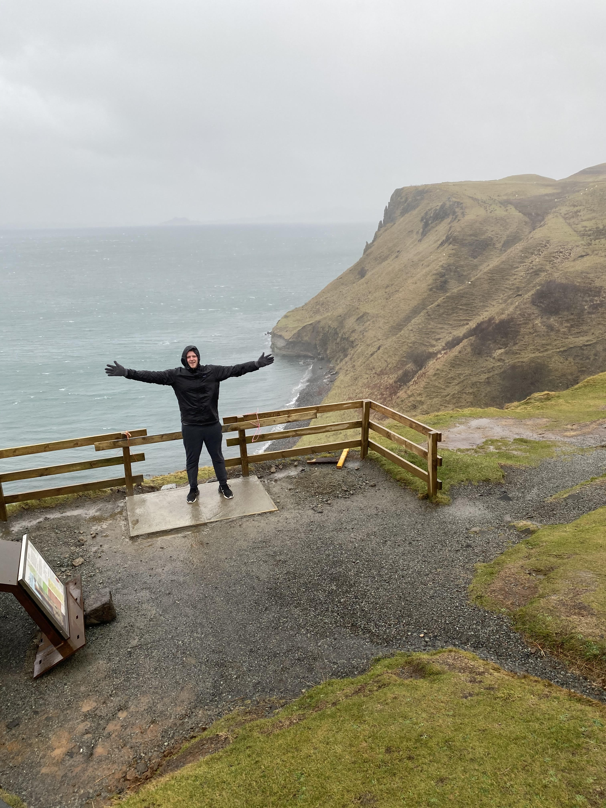

My name is Nicholas Van Orsdel and I’m currently a senior at the University of Minnesota. My studyings include double majoring in Political Science and Technical Writing and Communication. As I’m nearing graduation, I’m currently applying for law schools in hopes to attend law school. I would like to focus on corporate law, and have been applying to schools that specialize in this field of law.
This current semseter at the University of Minnesota, I've been focusing on my digital literacy, as well as my writing skills with digital technologies. This site will be an overview of everything I've learned throughout the semester in the class Writing With Digial Technologies, as well as my own personal portfolio.The picture below is from a trip I took while studying in London. I vistited Scotland and had the chance to hike around a majority of the Scottish Isles. I always have viewd this image of myself as a display of both my personality and my desire to explore.
